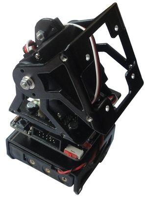
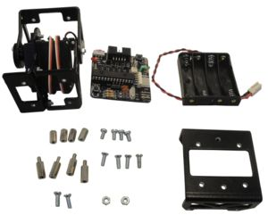
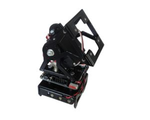
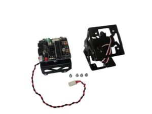
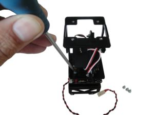
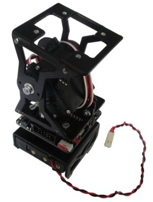
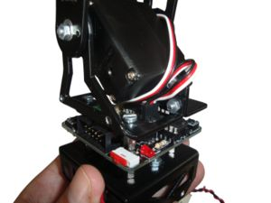
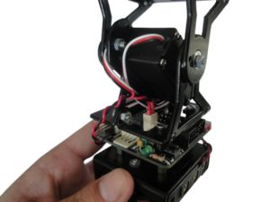
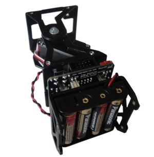
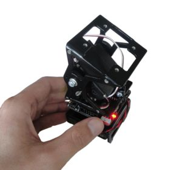

Unimod de tipo B1
Contenido
[ocultar]Introducción
Unimod es el módulo mínimo capaz de oscilar de manera autónoma. Para su montaje son necesarios los siguientes elementos:
- Un Módulo MY1 montado (Instrucciones de montaje)
- Una tarjeta Skycube
- Un portapilas plano para 4 pilas AAA, listo para ser usado (Instrucciones de montaje)
- La pieza D
- 4 separadores macho-hembra de 12mm y M3
- 4 separadores hembra-hembra de 10mm
- 8 tornillos M3 y entre 5 y 8 mm de largo
- 2 tornillos M3 de 8mm, con cabeza plana
- 2 tuercas M3
|  Inicio: Piezas necesarias para montar UNIMOD B1 (Click para ampliar) |
 Final: Unimod B1 montado (Click para ampliar) |


Montaje
| |
Pasos 0-3: Iguales que para el montaje de Unimod A1
Los pasos del 0 al 3 son los mismos que para el montaje de Unimod A1:
- Paso 0: Quitar la pintura del interior de los taladros de la pieza D (Opcional)
- Paso 1: Colocar los separadores macho-hembra en la pieza D
- Paso 2: Atornillar el portapilas a la pieza D
- Paso 3: Atornillar la tarjeta Skycube a la pieza D
Paso 4: Atornillar el módulo MY1 a la Skycube
| |
|  Tarjeta Skycube atornillada a la pieza D y al portapilas, Módulos MY1 y 4 tornillos (Click para ampliar) |
 Atornillar el Módulo MY1 a la Skycube. ¡Respectar la misma orientación que en la foto! (Click para ampliar) |
|  Módulo atornillado (Click para ampliar) |


Paso 5: Conectar el servo y la alimentación
- Conectar el servo a la Skycube, en cualquier de los conectores rectos, correspondientes a los servos 2, 4, 6 u 8. El cable negro del servo tiene que apuntar hacia el switch rojo de on-off.
|  Conectar el servo, con la misma orientación mostrada en la foto (Click para ampliar) |
 Conectar la alimentación (Click para ampliar) |


Paso 6: Poner las pilas
- Por último, colocar las 4 pilas AAA en el portapilas y encender Unimod para comprobar que la conexión se ha hecho correctamente. El led rojo de power on se deberá encender.
|  Unimod con las 4 pilas AAA colocadas (Click para ampliar) |
 Unimod encendido (Click para ampliar) |


Fotos
| Álbum de fotos |
Enlaces
Noticias
- 05/Abril/2010: Primera versión de la página terminada
- 04/Abril/2010: Comenzada esta página